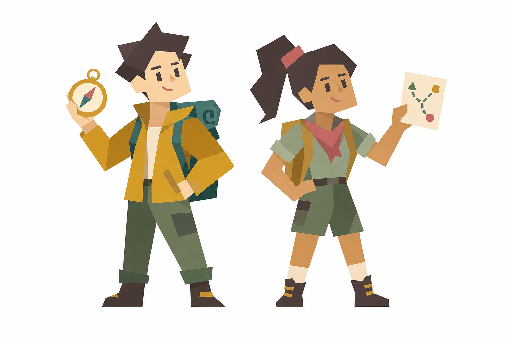

Upside
Risk, momentum, experiments, big swings.
A curated NYC dating community
Meet people who care about where they're going and who they're building life with.
Tandem brings together intentional NYC singles around the parts of compatibility most dating profiles miss: ambition, lifestyle, risk, stability, independence, relationships, and the kind of life you actually want to build.
Founding NYC community now forming for small, curated editions.
Dating, not networking
You are in your building era. Your dating life should understand that.
Why Tandem exists
Profiles can show what someone does, where they live, and how they look in photos. They rarely show how much uncertainty they can hold, what pace they want, or whether their idea of a good life fits yours.
The missing context
Not just “what do you do?”
How do you want to build your life, and who feels good to build around?
Complementary ambition
Tandem is not asking you to date a clone of your ambition. It gives people a clearer way to talk about the mix of momentum, steadiness, freedom, care, and direction that can make a relationship feel workable.
Risk, momentum, experiments, big swings.
Rhythm, structure, predictability, follow-through.
One swings for equity, one keeps the plan steady.
One spots openings, one knows where upside belongs.
One builds assets, one brings predictable income.
One creates momentum, one keeps life operating.
One takes the variable bet, one grounds the plan.
Who you build with changes what you can build.
Tandem uses archetypes to make the invisible parts of dating easier to name before people meet in real life.
Ambition Archetypes
The archetypes aren't a soulmate score. They're a way to talk about what dating profiles usually miss: risk, stability, pace, ambition, independence, and how you want to build a life.

Starts projects, companies, communities, side hustles, or ideas.
Creates consistency, emotional steadiness, financial rhythm, and grounded support.
Climbs or scales inside a clear path, optimizing for growth, speed, and momentum.
Builds audience, taste, community, media, content, or creative leverage.
Turns ambition into systems, plans, follow-through, and everyday execution.

Actively learns, tests paths, and expands while still choosing a direction.
How it works
Join the founding list, get considered for curated invitations, and meet people in real life through thoughtful NYC experiences.
Tell us a little about yourself, how you approach life, and what you're looking for.
We assemble small NYC experiences around fit, intention, and a balanced group, not first-come-first-served ticket sales.
Structured conversations make it easier to actually get to know people without endless swiping.
Join future editions, meet people from other NYC communities, and help shape what Tandem becomes.
Founding NYC community
We're starting intentionally: small curated experiences, thoughtful introductions, and real-world gatherings. Founding members will be the first invited to upcoming NYC editions.
Privacy and discretion
Responses are used to understand interest, shape curated NYC groups, and send future Tandem invitations. Dating preferences and private responses are not publicly displayed, and co-hosting partners do not receive your private form answers without consent.
Read the working privacy noteFounding collaboration
We're looking for a small number of NYC communities, membership organizations, and venues interested in co-hosting founding Tandem editions.
Tandem handles the concept, curation, and participant experience. Partners help bring together people from their communities.